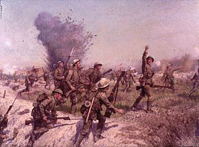
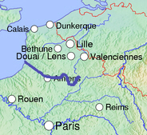
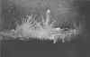
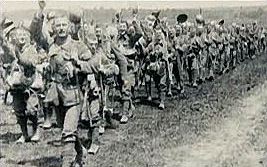
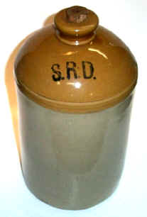

|
THE BATTLE OF THE
SOMME
 JULY On July 1,
the British and French launch an offensive to break through the German lines.
At 7:30 in the morning, thousands of soldiers go over the top against
the enemy lines. Forming a
front more than forty kilometres long, they advance across
No
Man's Land, under
German machine-gun fire. It is all over in less than half
an hour.
It is a massacre: more than fifty-five thousand British are killed, wounded or missing
in a single day.
That day Charles's unit
fires nearly a thousand salvoes, most of them in six
barrages supporting the infantry.
The heavy firing goes on all month; the unit changes position
a few times, but not very far, since the guns
fire every day. At the end of the month, a gunner in the unit
is killed and five others are wounded.
AUGUST
The heavy firing continues every day, an average of
three hundred salvoes but with peaks, including more than nine
hundred salvoes on August 18. No
respite. The targets are mainly enemy batteries, but
the unit also fires several barrages. The roads are
often shelled, as is the area around Flers, including the Abbaye
Eaucourt.
SEPTEMBER
Heavy firing every day. Charles's unit has been in action every
day, without exception, since the end of June. It moves to
a new position north-west of Montauban on the 11th of the
month and, that same day, fires more than two hundred salvoes at
twelve enemy
batteries and the church at Flers. On the 15th it fires a thousand salvoes at the same targets. On September 27 the unit moves
again to a new position and fires four hundred salvoes at
thirty enemy batteries the same day. The last three days of the
month, the firing is lighter.
|

Soldiers at the Front washing up
|

Cooks at the front
|
OCTOBER The
firing continues every day, without exception. The pace
slows, with an average of two hundred salvoes a day, but some
days more than six hundred salvoes are fired.
NOVEMBER
The firing continues every day. The pace slows
further, averaging a hundred salvoes a day, with a few
peaks of more than four hundred salvoes. On November 18 and 24 there is no firing,
the first time this has happened in months.
On November 28, the gunners leave by train for La
Neuville for a rest camp. The drivers take
the wagons by road, spending the night at Morlancourt. They
reach La Neuville at noon the next day.
DECEMBER On December 4, Charles and his unit take the train to
Montauban. On December 9, early in the afternoon, they
board another train for Barlin, arriving the
next morning. They stay there from December 11 to 25. The
day after Christmas, the unit moves to Bully Grenay. The
guns are in position as soon as they arrive, and on December 31
five salvoes are fired on the roads.
|

The Somme is a river in northern
France, in the Picardy region.
|

The Canadian battles of the Somme in 1916.
|
|

Back from the front
|

Night barrage
|
The troops gained no more ground that year. The autumn
rains turned the ground into a quagmire and the offensive
bogged down; the front had moved only six miles, though
the advance as such mattered little except
for the troops' morale. The Somme turned the British
army from an army of eager, inexperienced recruits
into a war machine comparable to those of France
and Germany, but at a terrible cost in human lives.
The official historian of the Canadian Army, Colonel
Nicholson, said of the Somme : « ...
we cannot close our eyes to the horror of the immense
butchery ».
This war of attrition, with no way out,
would
last two more years.
Keeping up morale

Many factors helped encourage the soldiers
to fight. Bonds of friendship, loyalty and community
based on common experience and shared dangers were
the chief of these, forging a strong sense
of belonging to the group, particularly in
small groups.

Training, strict discipline and strong
leadership also motivated the soldiers, and fear
of punishment helped keep them obedient.
Traditions, military values and a deep-rooted sense that their
cause was just were also important, even in armies made up of civilians, as
in Canada.
Military leaders tried to provide the soldiers with the small comforts
that could help them keep up their morale. Simple pleasures
were important for the health of mind, body and soul
during the long days at the front, often under hellish shelling.
Comforts from home
 Mail from home was delivered every day.
It was an important link with loved ones, and the
soldiers kept a keen interest in the doings of their
families, friends and communities. The soldiers' letters
were censored by their
officers and often by various command posts
behind the lines, but the men still told
those who had stayed at home about
their daily lives. Mail from home was delivered every day.
It was an important link with loved ones, and the
soldiers kept a keen interest in the doings of their
families, friends and communities. The soldiers' letters
were censored by their
officers and often by various command posts
behind the lines, but the men still told
those who had stayed at home about
their daily lives.
Parcels of treats sent from home
were also
an occasional pleasure. They held much-needed food, magazines,
clothing, and cigarettes of their favourite brands.
Most soldiers smoked, and smoked a lot. They received
cigarettes from the army as part of their weekly
ration, but they had no choice of brand.
Rum: reward, medicine and motivation
 The rum issued by the army
was also important.
When rum was available in the trenches, the
soldiers got a small tot in the morning and another in the
evening. It was a reward, a medicine and a way
of motivating the soldiers to fight. Men who had committed
offences were denied rum; those who volunteered for trench raids or
other dangerous missions got an extra ration.
|
|